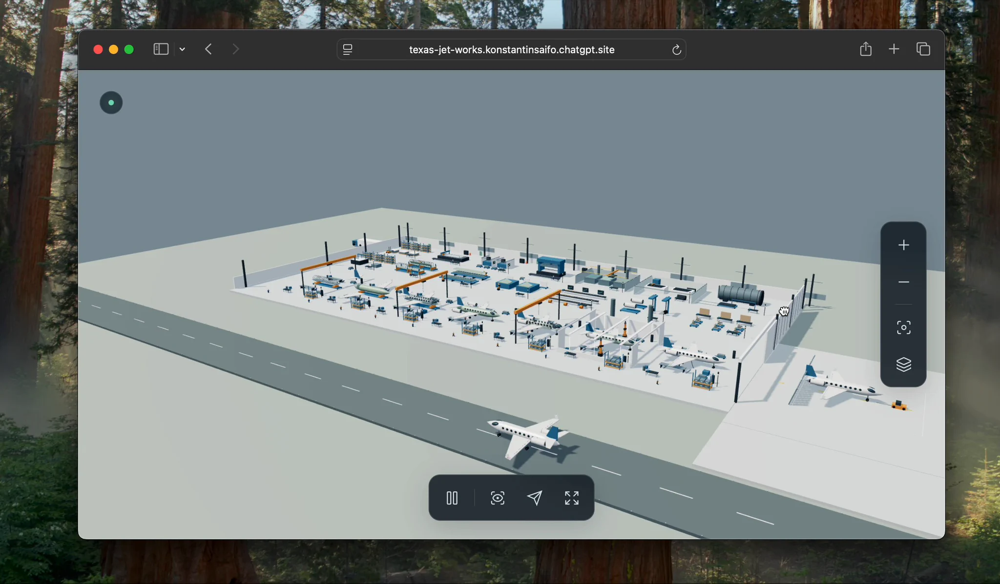
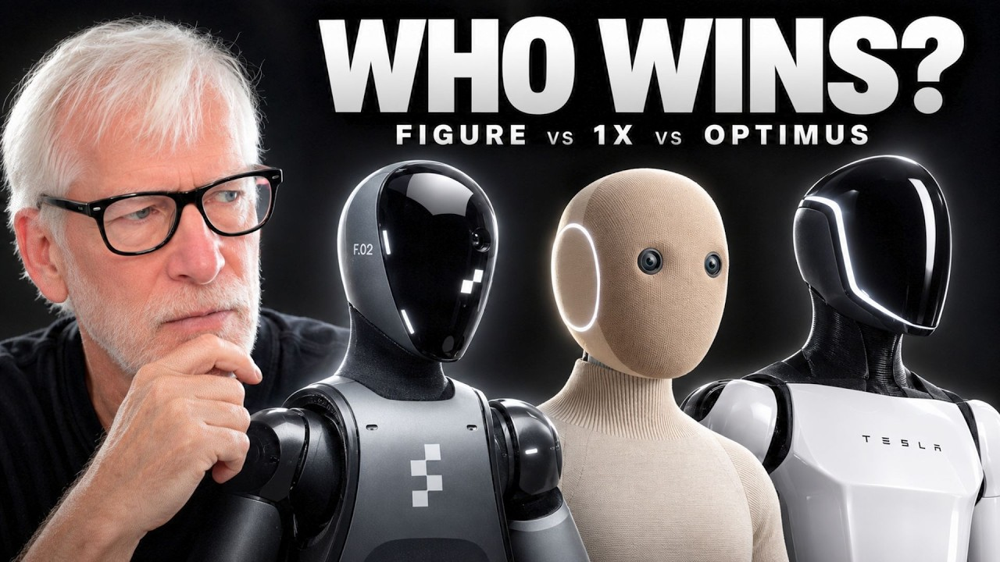

Watch on XAirsup.
Software for teams making physical things. I also built this interactive jet factory to explore how production could work.
I’m Konstantin. I build software for people making physical things, make my own prototypes, and talk to people whose work I want to understand.

Watch on XSoftware for teams making physical things. I also built this interactive jet factory to explore how production could work.

Watch on YouTubeI research and host conversations with people building difficult technology. This one is about humanoid robots.
A wearable illuminated prop I designed and assembled. The build video reached over 2 million views.
 Explore Pytro
Explore PytroBefore software, I made music: over 100 million streams, a Gold record, and live shows.